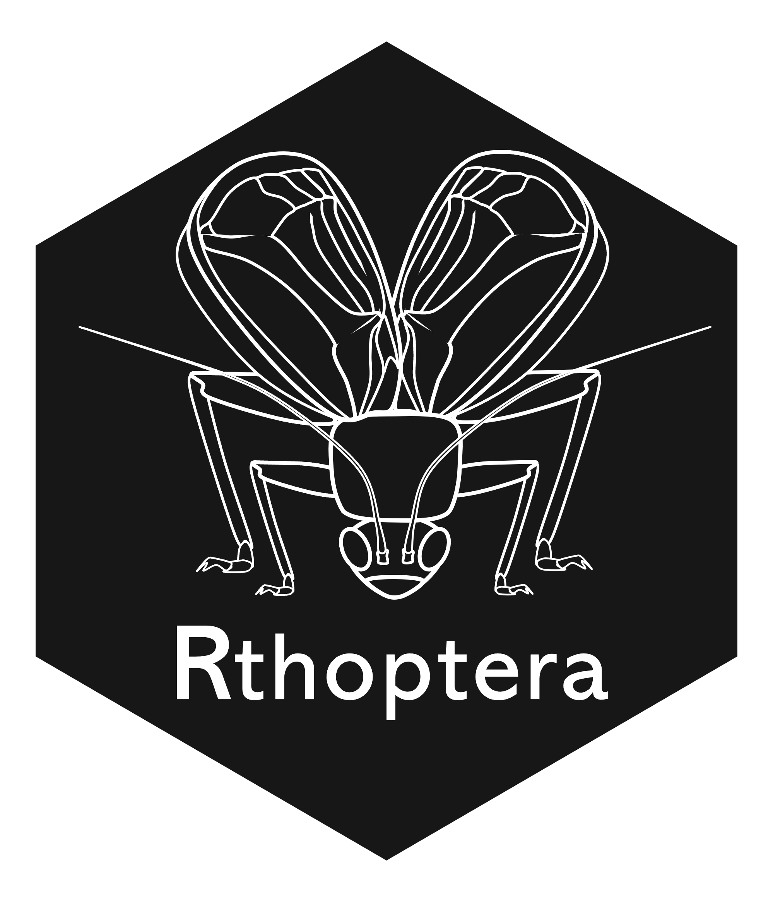
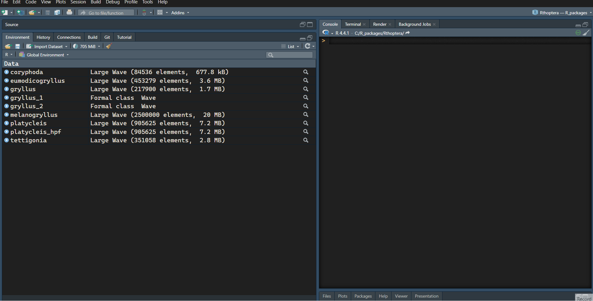

Preprocessing Audio with Rthoptera
NatureWaves
2024-10-02
Source:vignettes/Preprocess.Rmd
Preprocess.Rmd
There are many reasons why bioacousticians edit their recordings before analyzing them. This is especially true when working with field recordings, where non-target sounds may obscure the analyses, often occupying frequencies below the signal of interest. In other cases, the field recordist used an ultrasonic microphone and a high sampling rate (e.g., 128 kHz, 384 kHz) and the recorded insect happened to sing well below the Nyquist frequency (half the sampling rate). Sometimes the insect doesn’t call very often, forcing us to monitor for long periods of silence without stopping the recording. In all these cases, we might want to preprocess our recordings. Rthoptera offers interactive apps to deal with most of these issues, minimizing the need for multiple software in your workflow.
DISCLAIMER: R is not optimized for rendering large amounts of data in plots. If you have long sound files (> 1 min) recorded at high sampling rates (> 48 kHz), you might want to subset them with a dedicated audio software before importing them into R, unless you have a lot of patience or a very capable computer. A popular free audio editor is Audacity.
In this guide, we will work with the example Wave objects included in the package. If you want to work with a single file of the included data, you can run, for example:
# Uncheck the line below if you haven't installed RthopteraSounds
#remotes::install_github("naturewaves/RthopteraSounds")
library(RthopteraSounds)
data("tettigonia")which will make the song of Tettigonia cantans available in the R environment.
To load all of them at once, run this:
To use your own recordings you should run
launch_app("import_wave")which will allow you to select, name and import sound files as R
objects of class “Wave”. This app uses the readWave()
function from the tuneR package.
Now you can use the different apps to preprocess the Wave before analysis, including trimming, filtering, and downsampling. All the preprocessing apps in Rthoptera produce blueprint-like plots to remind users that these are not intended for publication, but instead to aid in decision-making on the edits.
As a rule of thumb, if you want to analyze several snippets of a recording separately, you should first evaluate if you need to do any filtering or downsampling before extracting the cuts to avoid repeating the process for each. If you want to analyze a single snippet from the wave file, you might want to trim it before filtering, which will optimize processing time for the other editing steps.
Trim
This app works with tuneR’s extractWave()
function, which has an interactive option but it is not accurate in the
selection of snippets. To trim a Wave, run the app, plot the
oscillogram, select the portion you want to save, type a name for it,
and save it. You can overwrite the original Wave by assigning the same
name for the selection (this will not have any effect outside the R
environment), or assign a new name to create a new Wave object.If you
want to save several snippets of the same length, just drag the first
selection to the desired position and assign a new name before
saving.
launch_app("trim")For the downsampling and band-passing examples, we will use the included “platycleis” Wave, a recording of Platycleis grisea made by Cesare Brizio in Italy.
Downsample
This app is based on seewave’s resamp()
function.
If you think the sampling rate used to record an insect was
unnecessarily high, use this app to verify this and downsample if
appropriate. By design, the minimum Nyquist allowed for this in
Rthoptera is 48 kHz. The other two options are 96 kHz, and
125 kHz. For most crickets, 48 kHz Nyquist will suffice, but caution
must be applied. Once the app has launched, select the Wave you want to
analyze and click “Plot”.Now you can assess what is the maximum
frequency of interest (MaxFOI) by hovering over the Mean Power Spectrum.
If the MaxFOI is less than half of the Nyquist (maximum visible
frequency in the plot), you can consider downsampling. Select the
closest available value above the MaxFOI and click “Downsample”.
launch_app("downsample")Band-pass Filter
This app is based on seewave’s fir()
(Finite Impulse Response Filter) function. If you believe that your
recording has low-frequency noise or non-target (e.g., other species)
sounds, you should consider applying a band-pass filter (BPF) with the
bandpass_filter app. This app allows you to verify the
presence of non-target sound and its range, helping to choose an
appropriate BPF. A Mean Power Spectrum view should be used to determine
whether a non-target sound or noise is above the -20dB threshold
typically employed to assess the bandwidth of the signal of interest
(SOI). If non-target sound is detected, the user should choose a proper
combination of high-pass filter and low-pass filter values which will
significantly attenuate the sounds below the threshold, allowing for
accurate measure and plot the SOI. Although it takes longer to render,
the spectrogram view may be necessary for field recordings where
multiple species are detected, as it allows for visual discrimination of
the SOI from non-target signals by inspecting their temporal patterns,
which are not visible in the mean power spectrum.
launch_app("bandpass_filter")